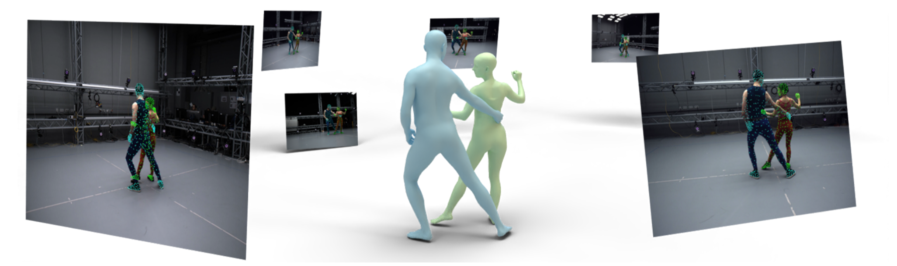
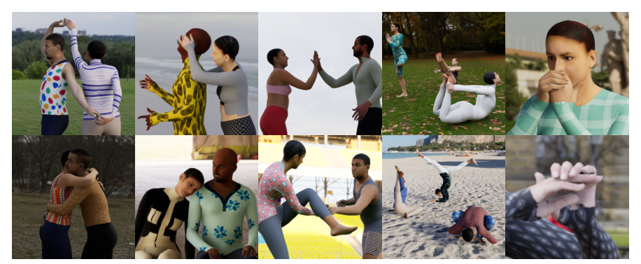
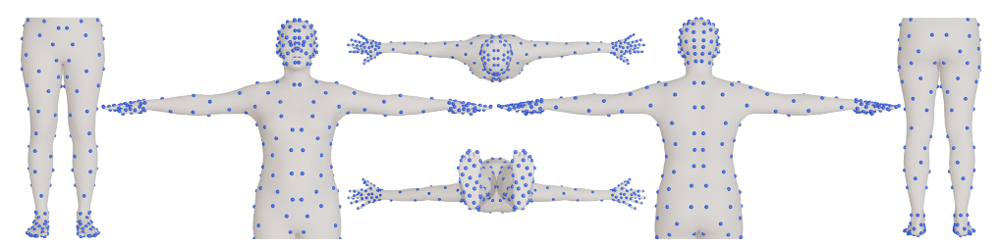
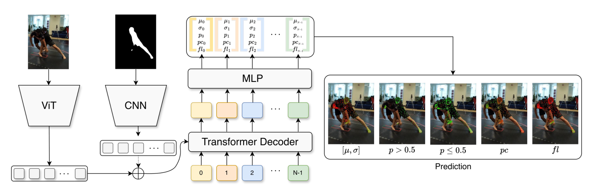
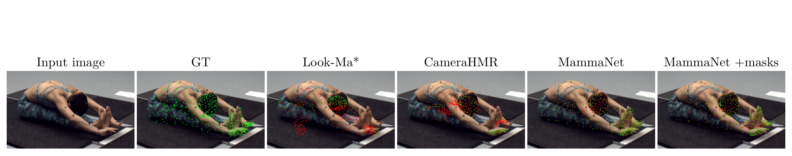
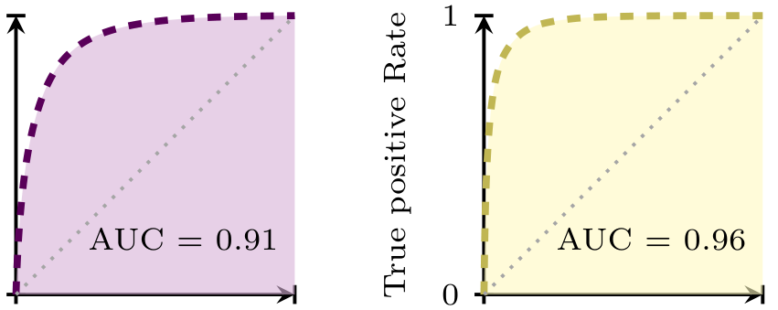
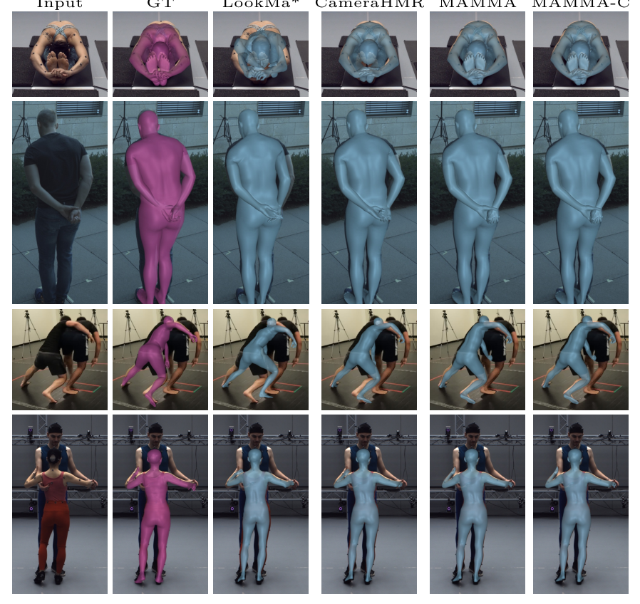

MAMMA 深读：要让无标记动捕逼近 Vicon，凭什么是“密集 2D 表面地标 + 每点一个可学习 query”而不是稀疏关键点？
导读。基于标记（marker-based）的 Vicon 是动捕的“金标准”，但它要专用硬件、贴反光球、手工清洗掉脱落/串号的噪声标记，复杂动作一段就要清几个钟头。学习类无标记方法想替掉它，却普遍卡在三道坎：多为单人、依赖稀疏关键点、在多人贴身接触/遮挡下崩。MAMMA 的核心赌注是“把稀疏关键点换成密集的 2D 表面地标”——每帧每视角预测 SMPL-X 身体上采出的 512 个表面点的像素位置 + 不确定度 + 可见性 + 接触，再把这些地标投影回标定相机做多视角重投影优化拟合 SMPL-X。立题问题因此很具体：当你要的精度逼近 Vicon、还得在两人贴身互动里把“谁是谁、哪块身体属于谁”分清，监督信号到底该“稀疏关键点”还是“密集表面点”，又该用什么网络结构去吐这么多点？第二条暗线是数据——真实数据里很难拿到接触/可见性这种细粒度标注，MAMMA 干脆在合成数据 MammaSyn 上造出带 SMPL-X 真值、带逐点接触/可见性的多视角序列。最终它在 Hi4D 上把 MPJPE 从前 SOTA 的 32.10mm 压到 12.44mm，对 Vicon+MoSh 的留出标记误差只差 0.862mm。
cuevhv/mamma）。{kind=link}

1. 核心问题：要逼近金标准，监督信号该“稀疏关键点”还是“密集表面点”？
动捕的现状是一道“贵但准” vs “便宜但糙”的取舍。marker-based（Vicon/OptiTrack/Qualisys 等）号称亚毫米级定位精度，是事实上的金标准，但代价是：专用硬件、人工贴标记、逐段清洗噪声/缺失/串号的标记数据——复杂动作或多人贴身时标记容易掉、容易被挡，清洗从几分钟到几小时不等，还要额外一步把原始标记转成骨架/参数化人体。学习类无标记方法想绕开这一切，论文却点名它们的三处通病：
- 多为单人。地标/关键点检测器通常在“画面里只有一个人”的图上训练，一旦两人贴身，网络很难被引导去“认对人”或把身体部件分给正确的人。
- 依赖稀疏关键点。很多多视角方法只检测稀疏 2D 关节、三角化出 3D 骨架，停在骨架层，要拿到完整的表面（体型/手）参数还得接一步 model-fitting，而这一步必须靠强姿态先验把信息不足补上。
- 遮挡与贴身互动下崩。拥抱、武术、双人舞这类贴身接触在日常很常见，却在现有动捕数据集里严重缺失；单视角方法又有深度歧义，人一贴近就分不清。
问：既然多视角三角化稀疏关键点已经能出 3D 骨架，为什么还要费劲去预测几百个“表面点”？多出来的点到底买到了什么？
引导：盯住“骨架 ≠ 表面”。SMPL-X 要解的不止是关节角，还有体型 $\beta$、全局平移/朝向、甚至手部姿态。稀疏关节只约束了“骨头在哪”，对“肉长什么样、手怎么摆”几乎没有约束——于是 fitting 阶段只能请出姿态/体型先验来兜底，而先验一旦和真实动作不符（极端瑜伽姿、贴身互动），就会把结果往“常见姿态”拉偏。
答：密集表面地标买到的是“信息量足以直接解出整套 SMPL-X 参数”。当你在每个视角都有 512 个分布在全身（且手/脚/头加密）的表面点的像素位置时，多视角重投影约束的数量远超 SMPL-X 的自由度——优化问题从“欠定、要先验补”变成“超定、数据自己说了算”。论文据此做了一个很硬的结构性决定：fitting 时既不上姿态先验，也不做姿态初始化（只对体型加一个温和的 L2 正则），因为“地标本身已经携带了关于这个人和这个场景的足够信息”。这与“稀疏关键点 + 强先验”的旧范式是相反的赌注：把建模负担从先验挪回到观测。
Takeaway：真问题不是“用不用三角化”，而是“观测稠不稠到能甩掉先验”。稀疏点逼你用先验补全、先验又把结果拉向均值；密集表面点把约束做到超定，于是 fitting 可以无先验、无初始化，让极端/贴身姿态不被“常见姿态”污染。
2. 贡献拆解：作者明确提出了什么？
作者明确提出的贡献（论文 §1）：
- 密集 2D 表面地标检测器 MammaNet——用 ViT-Base 提图像特征、额外 CNN 处理 mask，transformer decoder 用每个地标一个可学习 embedding（landmark query）解出 512 个表面点，并同时预测不确定度 $\sigma$、可见性 $p$、人-人接触 $pc$、地面接触 $fl$。
- mask 条件 + 跨视角对应——用 SAM2 算/传播每个人的分割掩码作为条件输入，并把 SAM2 的轨迹标签贴到每个地标预测上，用对称极线距离做跨视角身份匹配。
- 无先验、无初始化的多视角 fitting——把地标投影到标定相机、最小化 2D 重投影误差，分阶段优化平移/旋转→姿态/体型→不确定度重加权→接触。
- 合成数据集 MammaSyn + 真实评测基准——扩展 BEDLAM 到 32 相机多视角、补极端姿态/手部/双人互动，含 SMPL-X 真值与逐点接触/可见性；并造了三个真实评测集（含一个专门对标 Vicon 的 MammaEval-Extra）。
读数提醒：这篇的“评测姿态”要单独标注
MAMMA 的最强主张不是“某个 benchmark 刷了 SOTA”，而是“无标记可以替掉金标准做真值”。它的杀手锏实验是 §5.5：用 Vicon 标记 + MoSh++ 拟 SMPL-X，再留出一批不参与拟合的额外标记当独立真值，比较“Vicon+MoSh 预测留出标记”和“MAMMA 预测留出标记”的误差。两者只差 0.862mm——这是衡量“两套推断出的人体谁更接近真实”，而不是“谁更接近 Vicon 自己的标记”。理解结论要扣住这一点：它在论证可替代性，不是宣称比 Vicon 标记定位更准。
读者能进一步推断的是：这篇真正推进的单一变量是“监督信号的稠密度”——把它从稀疏关键点拉到密集表面点，连锁解锁了“无先验 fitting”和“贴身互动可解”。其余组件（ViT 骨干、SAM2 mask、极线匹配、L-BFGS）多是成熟件，新意在landmark query 的结构与“密集到能甩掉先验”这一判断，以及为训练这套东西而专门合成的数据。
3. 数据：用合成造出“带逐点接触/可见性真值”的多视角序列
MAMMA 有一个显式立场：MammaNet 完全用合成数据训练。理由是机制性的——真实多人接触序列里，逐顶点的接触标签、逐地标的可见性几乎不可能人工标，而这两样恰恰是 MAMMA 要预测、又对贴身互动至关重要的信号。合成则可以从 SMPL-X 网格 + 几何直接算出真值。
3.1 MammaSyn：把 BEDLAM 扩到 32 相机、补上互动与手
MammaSyn 是 BEDLAM 的扩展，含 2.5M 个样本（crop）。流水线被改造成 32 相机多视角虚拟相机阵；从多个动作源采序列，并新采两组 marker-based(Vicon) 数据补“高质量互动”：Latin-Dance（2 人、10 段舞蹈）与 Interacting Couples（2 人、48 段双人互动）。所有 3D 人体统一为 SMPL-X。每个样本存逐人分割掩码、深度图、逐顶点可见性，并用带符号距离函数（SDF）+ 表面法向算出地面/人-人的逐顶点接触标签。最终图像约 955k 张。
{kind=link}

{kind=link}

| 子集 | 时长（分钟） | 来源数据集 | 占图像比例 |
|---|---|---|---|
| MammaSyn-S（单人） | 86 | BEDLAM | 9.9% |
| MOYO | 15.9% | ||
| MammaSyn-I（互动） | 211 | Harmony4D | 17.7% |
| Hi4D | 8.0% | ||
| Inter-X | 14.6% | ||
| Interacting Couples（自采） | 19.4% | ||
| Latin-Dance（自采） | 3.4% | ||
| MammaSyn-H（手部） | 36 | InterHand2.6M | 10.0% |
| SignAvatars | 1.0% |
读这张表抓两点。其一，互动子集（MammaSyn-I）是分布主力（合计约 63% 图像），这与立题“贴身互动”一致——数据预算就压在最难的场景上。其二，手部单独建子集：因为 SMPL-X 要解手部姿态，而手在全身图里太小、点太密才学得动，于是用 InterHand2.6M/SignAvatars 把手的多样性补上，并通过给 BEDLAM 身体拟合 MANO 手把手姿合进来（论文 §3）。
3.2 真实评测：三个集，外加专门对标 Vicon 的留出标记
MAMMA 采了三个真实评测集，都用 Vicon 同步多视角 RGB、标记经手工清洗后用 MoSh++ 转成 SMPL-X 作真值：MammaEval-S（singles，16 视角，3 人 22 段含物体交互）、MammaEval-D（dance，32 视角，专业舞者 18 段 West Coast Swing）、MammaEval-Extra（32 视角，3 人各 4 段含走/舞/基础运动）。Extra 的设计很关键：除标准 Vicon 标记集外，每人多贴 37 个额外标记，这些额外标记不参与 MoSh++ 拟合，专作独立真值，用来公平比较 marker-based 与 markerless 两条管线（详见 §5.5）。此外还释放了一个仅用 MAMMA 采的舞蹈集（9 人、约 1 小时、30 FPS）。
4. Pipeline：地标检测 → 跨视角认人 → 多视角拟合 SMPL-X
把整条流水线拆成可独立验证的三段，每段都对应一个“去掉就崩”的功能：
- ① 每视角密集地标检测（MammaNet）。输入图像（+ SAM2 mask），对被 SAM2 追踪的每个人，每帧每视角输出 512 个地标的像素位置 $\mu$、不确定度 $\sigma$、可见性 $p$、接触 $pc/fl$。去掉它 → 没有稠密观测，回退到稀疏关键点。
- ② 跨视角对应（认人）。对所有视角检测到的人两两比对，用对称极线距离构 affinity，匈牙利匹配 + 跨视角环一致，把同一个人在所有视角里串起来。去掉它 → 多视角三角化把不同人的地标混在一起，贴身时尤其致命。
- ③ 多视角 fitting。把地标投影回标定相机，分阶段最小化重投影误差解出 SMPL-X 的 $\{\beta,\theta,t\}$，并用接触项防穿模。去掉它 → 只有 2D 地标，没有 3D 参数化人体。
{kind=link}

数据流 vs 模型流 vs 训练/推理流
数据流：多视角视频 → 每视角每人每帧 512 个 2D 地标 → 跨视角串成同一人 → 拟合出每帧每人的 SMPL-X。模型流：只有 MammaNet 是学习的（ViT+CNN+decoder），跨视角匹配与 fitting 都是不可训练的几何/优化模块。训练 vs 推理：训练只训 MammaNet、且只在合成 BEDLAM crop 上；推理时 mask 来自 SAM2、fitting 用 L-BFGS。这条分界很重要——MAMMA 的“泛化”主要是 MammaNet 从合成迁到真实的泛化，几何模块本身不学习、不存在过拟合。
5. 方法：每点一个 query 的密集地标 + 无先验的重投影优化
5.1 为什么是“每个地标一个可学习 query”，而不是一个 token 出所有点？
MammaNet 用 ViT-Base 抽图像特征、一个额外 CNN 处理 mask，再用 transformer decoder 解出 $N{=}512$ 个地标。关键设计在 decoder 的输入：不像 CameraHMR 那样用单个可学习 embedding 去回归整组地标，而是学 $N$ 个 embedding（landmark query），每个对应一个地标。
问：单 token 出 512 个点和“每点一个 query”，最后都过 MLP 出 512 组数，差别真有那么大吗？给两条独立理由。
路径 A（注意力的“寻址”视角，自上而下）：decoder 的 cross-attention 本质是“query 去图像 patch 里检索信息”。若只有一个 query，它必须把全身 512 个点要用的图像证据压进同一个注意力分布里，再靠输出 MLP 把这团混合信息切成 512 份——等于让一个“通用检索器”同时服务语义迥异的脚趾和鼻尖。给每个地标一个专属 query 后，第 $i$ 个 query 的 cross-attention 可以只聚焦与第 $i$ 个表面点最相关的图像 patch（论文原话：learn to match each landmark to the most relevant image patches）。寻址被解耦，每个点的定位都用自己的注意力分布，精度自然更高。
路径 B（DETR 式 object query 的类比，自下而上）：这正是 DETR 把“一个检测头”换成“一组 object query”的同一招——用一组可学习 query 让每个 query 专门化为某个槽位。这里把“槽位”换成“具名表面点”：self-attention 在 512 个 query 间建立成对关联（学到“手腕地标和肘部地标的相对关系”这类身体结构先验），cross-attention 负责各自定位。两件事分到 self/cross 两种注意力上，比单 token 把一切揉在一起更可学。两条路径同指一个结论：专属 query 把“定位”与“结构关联”解耦，且每个点独享注意力带宽——这是密集地标能学准的结构前提。
Takeaway：密集地标不是“把输出维度从 17 改成 512”这么简单。没有每点一个 query 的解耦寻址，单 token 在 512 个语义不同的点上会被迫共享注意力，密集监督的好处就吃不到。
对每个地标 $i\in\{0,\dots,N-1\}$，网络预测像素坐标 $\mu_i=[x,y]$ 与不确定度 $\sigma_i$；并额外预测可见性概率 $p_i$（论文观察到：刚性、被遮挡的区域如躯干，位置可能对、但网络给的 $\sigma$ 偏高，所以单独用一个可见性头来表达“看不看得见”），以及人-人接触 $pc_i$ 与地面接触 $fl_i$。训练损失：地标位置用高斯负对数似然，可见性用二元交叉熵，接触用focal loss（因为“无接触”的地标远多于“有接触”的，类别不均衡），各项带逐地标权重 $\lambda$。
5.2 fitting：把地标投影回相机，分阶段最小化重投影误差
给定标定相机参数 $Q$、预测地标 $L$（含 $\mu,\sigma,p$），拟合 SMPL-X 中性体 $M(\beta,\theta,t)$，用 L-BFGS 优化。核心是重投影项：把 SMPL-X 网格上对应的顶点 $V$ 投影到每个相机，惩罚它与预测地标 $\mu$ 的像素偏差，用 $1/\sigma$ 加权、并套一个鲁棒核：
公式读法（式 1 是“无先验 fitting”能成立的关键）
为什么用 $1/\sigma$ 加权？这是带不确定度的加权最小二乘的标准做法：网络对某个地标越不确定（$\sigma$ 大），它在重投影目标里的权重越小，不让坏点拖偏拟合。再叠 Geman–McClure 鲁棒核 $\rho$，进一步把少数离群地标的影响饱和掉。正因为有 512 个这样“自带置信度、又被鲁棒核保护”的密集约束，超定方程组里少数错点不致命——这就是 §1 说的“密集到能甩掉先验”的算法体现：论文明说 fitting 不用姿态先验、不做姿态/体型回归初始化，初始平移只取“各相机射线最互相靠近的 3D 点”。
优化分阶段：① 先解平移/旋转（只动全局位姿，最小化 $E_{\text{ldmks}}$）；② 再解姿态/体型/平移（加体型 L2 正则 $E_{\text{shape}}$，16 个体型系数）；③ 用重投影误差重加权不确定度——此时已接近局部最优，把第二阶段的重投影残差 $e_i$ 当“证据”去缩放 $\sigma_i$：$\sigma_i'=\sigma_i\cdot\min(\max(e_i/\tau,0),1)$，$\tau{=}10$px，意思是“网络嘴上没把握、但点其实落对了”就把它的权重放回来；④ 最后优化接触，并加大关节加速度正则 $E_{\text{temp}}$ 平滑时间。
5.3 接触项：把“逐视角接触概率”平均成期望，再分别处理穿模与吸附
接触阶段的能量 $E_{\text{cont}}=E_p+E_c$ 分两块，背后各有一个清楚的几何动机。先把每视角网络输出的接触概率平均，得到期望接触概率（假设每视角是近似无偏、已标定的局部估计，平均能降方差）。然后：
问：排斥项不带概率权重、吸附项却乘 $pc_i$——为什么不对称？
答：因为两件事的“先验默认值”不同。穿模在物理上几乎总是错的（除了软组织那点形变 $\delta$），所以排斥项对所有顶点无条件生效，不需要网络批准。而“吸附到对方表面”只在确实接触时才对——若无脑把所有靠近的点都吸到表面，会在“擦身而过但没碰”的情形造出假接触。于是吸附项必须乘上预测接触概率 $pc_i$，只对网络判定“这里在接触”的点施加吸附。这是“先讲为什么需要、再写约束”的典型：约束形式跟着物理默认值走——防穿模是硬约束（恒为真），吸附是条件约束（要证据）。
Takeaway：接触建模不是一个对称的“拉到一起”，而是“无条件不许穿 + 有证据才吸附”两半。这也解释了为何要单独训一个接触头：吸附项的开关就是 $pc_i$。
5.4 跨视角认人：对称极线距离 + 匈牙利匹配 + 环一致
多视角三角化前必须先“认人”——把不同视角里属于同一个人的地标串起来。MAMMA 用纯几何做法：对两视角的地标集 $x_a,x_b$，定义几何亲和度 $A(x_a,x_b)=\exp(-D_g/\lambda)\in[0,1]$，其中 $D_g$ 是对称极线距离：
读法很直接：若视角 $a$ 里的某点和视角 $b$ 里的某点真是同一物理点，则前者必落在后者对应的极线上，点到极线距离应近 0；对称地两个方向都算、平均，得到稳健的几何亲和度。所有视角两两的亲和度构成代价矩阵 $1-A$，匈牙利匹配求一对一最优匹配，再把所有视角对的高亲和匹配跨视角串成环一致的对应图，其连通分量就是“同一个人在各视角的集合”。论文报告这套做法在三个互动集上达到 100% 的跨视角身份匹配准确率，因此不需要像经典方法那样再外接一个网络去算身份特征——密集地标本身的几何信息已经够认人。
问：既然有了 SAM2 mask 在追人，为什么还要这套极线匹配？mask 不就把人分开了吗？
答：SAM2 只在单个视角内把人分开、并沿时间追踪同一个人；它给不出“视角 A 的人#1 和视角 B 的人#2 是同一人”这种跨视角对应——那是个三维几何问题，mask 解决不了。而且论文指出 SAM2 在两人贴太近时会漏掉部分身体，mask 本身也不完美。极线匹配用的是多视角几何约束（同一 3D 点在不同视角的投影必满足极线关系），与 mask 互补：mask 管“视角内分人 + 时序追踪”，极线匹配管“跨视角串人”。两者缺一，贴身多人就串不起来。
Takeaway：mask（SAM2）和极线匹配解决的是正交的两个问题——视角内 vs 跨视角。把 SAM2 轨迹标签贴到地标上，正是为了让“视角内身份”和“跨视角几何”能接到一起。
6. 训练配置：300K 迭代、4×A100、约 3 天，仅合成数据
训练账本来自论文附录 §7（Landmark Networks Training Details）。MammaNet 与两个基线（CameraHMR、LookMa*）在相同设置下训练以求公平：
| 项目 | 取值 |
|---|---|
| 迭代数 | 300K iterations |
| 硬件 | 4 × NVIDIA A100 |
| 每卡 batch / 梯度累积 | 24 / 累积 2 步（等效 batch 192） |
| 训练时长 | 约 3 天 |
| 优化器 / warm-up | Adam / 500 步 |
| 骨干初始化（MammaNet & CameraHMR） | ViTPose-B（256×192 预训练），位置编码插值到 512×384 |
| 输入分辨率 | 512 × 384 |
| 训练数据 | 仅合成（BEDLAM/MammaSyn 的 crop） |
几个细节值得记：(1) 仅合成数据训练，真实集只用于评测——这强化了“MammaNet 的真实泛化全靠合成质量”的判断；(2) 为对付其它模型不预测接触，作者还训了一个只出不确定度+可见性的精简版做公平对比；(3) 因 SMPL-X 要解手，输入分辨率特意拉到 512×384（按 ViTPose 的位置编码插值），合成渲染也用约 2 倍于 BEDLAM 的分辨率（2056×1504）以保住手部细节。
GPU 账本口径
“4×A100、约 3 天”是按论文披露数字粗略估算，不等同于实际账单。论文未说明合成渲染（2.8k 序列、8 视角、95 张 HDR 等）的算力开销；这里只转写训练侧数字。
7. 实验：从 2D 地标到 3D 拟合，逐张表看证据
7.1 2D 地标精度：单人与双人
先比 2D 地标本身的精度（GT 与预测地标的平均 2D 欧氏像素误差，越低越好）。对手是 CameraHMR（同骨干、单 token decoder）与 LookMa*（Hewitt 等的复现，去掉姿态/体型头只留地标头）。
| 模型 | RICH | MOYO | MammaEval-S |
|---|---|---|---|
| Look-Ma* | 13.26 | 22.43 | 10.25 |
| CameraHMR | 8.84 | 12.53 | 6.32 |
| MammaNet（ours） | 8.55 | 11.40 | 6.09 |
| MammaNet + masks SAM2（ours） | 8.83 | 11.04 | 6.16 |
| 模型 | Harmony4D | CHI3D | MammaEval-D |
|---|---|---|---|
| Look-Ma* | 31.45 | 8.77 | 15.01 |
| CameraHMR | 32.84 | 6.30 | 10.21 |
| MammaNet（ours） | 31.96 | 6.22 | 9.87 |
| MammaNet + masks SAM2（ours） | 18.33 | 4.36 | 7.70 |
这两张表的对照非常干净，正是“控制变量”的样板：单人时（表 1）mask 几乎不影响——画面里就一个人，要不要 mask 都能定位（MOYO 略有提升）；双人贴身时（表 2）mask 的作用爆发——Harmony4D 从 31.96 直降到 18.33，CHI3D 6.22→4.36。这恰好支撑 §5 的机制论断：mask 的真正价值在“两人重叠时帮网络锁定目标个体”，而非泛泛提升。同时即便不用 mask，MammaNet(ours) 在多数列也已优于 CameraHMR，说明“每点一个 query”的结构本身就买到了精度。
{kind=link}

7.2 接触预测与跨视角对应
接触用 ROC-AUC 评（AUC=0.5 随机、越高越好）：地面接触在 MOYO 测、人-人接触在 Hi4D 测（且训练时剔除了 Hi4D 序列以防泄漏）。两者 AUC 都 >0.90，说明接触头确实学到了可用信号。跨视角对应如 §5.4 所述达 100% 准确，免去外接身份网络。
{kind=link}

| 模型 | M.P. Depth (mm) | M.P. Verts. |
|---|---|---|
| Look-Ma* | 13.73 | 990.61 |
| CameraHMR | 13.41 | 678.10 |
| Ground truth | 9.84 | 479.94 |
| MAMMA（ours） | 10.50 | 456.05 |
| MAMMA-C（ours，含接触优化） | 8.46 | 378.02 |
表 3 有个耐人寻味的细节：MAMMA-C 的穿模甚至低于 Ground truth（8.46 vs 9.84mm 深度、378 vs 480 顶点）。论文据此提醒——“人体重建指标不能说明全部”，因为GT 本身（Vicon+MoSh）就带一定互穿，于是直接对 MPJPE/PVE 比可能反而惩罚“比 GT 更干净”的预测。这就是为什么要单列穿模指标：它衡量的是物理合理性，而非“贴不贴近一个本身不完美的 GT”。
7.3 3D 拟合误差（主表）
把所有方法都拟合出 SMPL-X，报告 55 个关节的 MPJPE 与逐顶点误差 PVE（mm，越低越好）。对手含多视角 SMPLify-X。
| 模型 | RICH | Harmony4D | CHI3D | MammaEval-S | MammaEval-D | MOYO |
|---|---|---|---|---|---|---|
| SMPLify-X | 96.18 / 71.42 | - / - | 67.68 / 51.79 | 47.15 / 35.42 | 53.92 / 43.08 | 62.15 / 44.68 |
| Look-Ma* | 39.52 / 30.29 | 59.37 / 45.6 | 46.47 / 39.36 | 25.97 / 23.94 | 27.98 / 24.89 | 60.15 / 53.82 |
| CameraHMR | 25.61 / 21.36 | 58.59 / 42.0 | 40.8 / 34.61 | 15.25 / 18.43 | 20.41 / 21.06 | 33.75 / 33.74 |
| MAMMA | 22.20 / 19.76 | 45.26 / 34.02 | 38.01 / 32.84 | 12.96 / 17.18 | 17.71 / 19.80 | 22.95 / 25.48 |
| MAMMA-C | 22.20 / 19.76 | 45.35 / 34.02 | 37.96 / 32.82 | 12.96 / 17.18 | 17.73 / 19.78 | 22.95 / 25.48 |
主表的读法：MAMMA 在所有 6 个集上的 MPJPE/PVE 都优于 SMPLify-X、Look-Ma*、CameraHMR。MOYO（极端瑜伽）差距最大（22.95 vs CameraHMR 33.75），印证“无先验 fitting 在极端姿态上不被先验拉偏”。MAMMA 与 MAMMA-C 在这张表上几乎相同——因为接触优化主要改善的是穿模（表 3）而非关节位置，二者是不同维度的指标。
{kind=link}

7.4 对标 Vicon：只差 0.862mm
这是全文最硬的实验（§5.5）。在 MammaEval-Extra 上，每人额外贴 37 个不参与 MoSh++ 拟合的标记当独立真值。用 Vicon+MoSh 估的 SMPL-X 与 MAMMA 估的 SMPL-X 分别去预测这些留出标记的 3D 位置，比平均欧氏误差：Vicon+MoSh 21.619mm vs MAMMA 22.481mm，仅差 0.862mm。论文的结论是：这点差距小于“构造 AMASS（被无数工作当真值用）所用管线”的误差量级，因此MAMMA 足以替代传统管线做 SMPL-X 真值。配套效率账：把“采集到 SMPL-X”的全流程从约 72 小时压到 26 小时（消费级 GPU），近 3 倍提速。
| 方法 | MPJPE (mm) |
|---|---|
| MvP | 92.77 |
| Graph | 89.62 |
| Faster VoxelPose | 68.40 |
| MVPose* | 53.05 |
| MVPose | 42.63 |
| 4DAssociation | 41.29 |
| AvatarPose | 32.10 |
| MAMMA-C（ours） | 12.44 |
表 5 是“大幅领先”的硬证据：Hi4D 上把前 SOTA AvatarPose 的 32.10mm 砍到 12.44mm（降幅约 61%），且 MAMMA 没在任何 Hi4D 序列上训练。论文也说明了对比口径：不与纯前馈方法比（它们要为每个多视角配置重训），也不与单帧相机方法比（它们恢复不了全局平移/朝向）——这是合理的可比性边界，读者应据此理解“领先”的范围。
8. 消融：每个设计是否真的在起作用？
MAMMA 的消融分散在各小节，但都遵循“改一个变量看一个指标”的纪律，可归纳为四组：
- mask 条件（表 1 vs 表 2）。变量=有无 SAM2 mask。结论：单人无差、双人贴身大幅获益（Harmony4D 31.96→18.33）。这把“mask 提升来自哪里”钉死在“多人消歧”而非“普涨”。
- landmark query 结构（表 1/2 中 MammaNet vs CameraHMR）。变量=每点一个 query vs 单 token，同骨干。结论：即便都不用 mask，MammaNet 多数列已优于 CameraHMR，验证 §5.1 的解耦寻址论断。
- 接触优化 MAMMA-C（表 3 vs 表 4）。变量=有无接触阶段。结论：穿模显著下降（表 3，10.50→8.46mm）、但 MPJPE 几乎不变（表 4）——说明接触项作用在物理合理性维度，且作者诚实指出地面接触优化没有改善结果，暗示网络地标已足够鲁棒，不必硬上 floor-contact。
- 不确定度重加权（§5.2 第三阶段）。变量=是否用重投影残差回写 $\sigma$。动机=网络对“位置其实对、但嘴上没把握”的点给了过高 $\sigma$，在接近最优时用残差把这些点的权重放回来。
问：消融最该回答的是“密集 vs 稀疏到底差多少”，但论文没有直接把 512 点改成 17 点做对比，这算缺口吗？
答：算一个诚实的边界。论文没有“512→17 点”的单变量消融，但用了两条间接证据顶上：(1) 与 SMPLify-X（稀疏关键点 + 强先验范式的代表）的主表对比，MAMMA 在每个集都大幅领先（RICH 22.20 vs 96.18）；(2) 与 CameraHMR（同样密集地标、但单 token）的对比，隔离出“query 结构”的贡献。两者合起来支持“密集 + 解耦 query 都重要”，但没有把“地标数量”作为单独旋钮扫一遍——若要严格归因“稠密度本身的边际收益”，这是留给后续工作的实验。这里如实标注，不替论文宣称它没做的消融。
Takeaway：消融充分支撑了 mask、query 结构、接触项各自的作用；但“稠密度”这一最核心变量是间接验证而非直接扫描——读者应把“密集优于稀疏”理解为“范式对比 + 结构对比”的合力，而非一条受控曲线。
9. 局限、复现门槛与适用边界
- 仍依赖标定多相机。MAMMA 假设相机标定已知、需要同步多视角输入（评测用 16/32 视角）。它降低的是“贴标记 + 清洗”的成本，不是“随手单目就能动捕”；论文另给了四部 iPhone 的消费级设置结果（在 SupMat），但主结果建立在多相机阵上。
- SAM2 mask 不完美。两人贴太近时 SAM2 会漏掉部分身体，导致地标预测受影响。论文称方法“仍鲁棒”，但 mask 质量是上游依赖；§7.1 双人提升也正建立在 mask 可用的前提上。
- 合成-真实域差。MammaNet 仅用合成数据训练，真实泛化全押在 MammaSyn 的渲染质量与分布覆盖上。极端真实纹理/光照/相机若超出合成分布，行为论文未充分讨论。
- “替代金标准”的口径。0.862mm 差距是在 MammaEval-Extra（3 人、走/舞/基础运动）上、用留出标记测得；它论证该类动作下的可替代性，并非对一切动作（如高速碰撞、极端遮挡）都成立。GT 本身（Vicon+MoSh）也带互穿，使纯 MPJPE/PVE 比含噪声。
- 复现门槛。MammaNet 训练需 4×A100、约 3 天（按论文披露数字粗略估算，不等同于实际账单）；MammaSyn 渲染（2.8k 序列、8 视角、2056×1504）的算力论文未说明。代码/数据/权重承诺开源（
cuevhv/mamma），实际开放程度以仓库为准。 - 未做的对比。不与纯前馈多视角方法、单帧相机方法直接比（理由见 §7.4）；也未做“地标数量”的受控消融（见 §8）。
10. 一句话总结与三个 Takeaway
一句话：MAMMA 把无标记多人动捕的监督信号从“稀疏关键点”升级为“512 个密集 2D 表面地标 + 不确定度/可见性/接触”，并用“每点一个可学习 query”的 transformer 把它学准，于是多视角 fitting 可以无姿态先验、无初始化地解出 SMPL-X——在 Hi4D 上 12.44mm、对 Vicon+MoSh 仅差 0.862mm，逼近金标准。
- 稠密度是这篇的“单一变量”。密集表面点把多视角约束做到超定，让 fitting 甩掉先验/初始化，从而不被“常见姿态”拉偏——这是它在极端/贴身场景领先的根因。读这篇先抓“为什么稀疏→密集能解锁无先验”。
- 结构跟着信息走。“每点一个 query”解耦了定位（cross-attn）与身体结构关联（self-attn）；mask 条件只在多人贴身时发力；接触项“无条件防穿模 + 有证据才吸附”。每个组件都对应一个可被消融验证的功能。
- “替金标准”是它最大的主张，也最该谨慎读。0.862mm 来自留出标记、特定动作集；它论证的是可替代性而非超越定位精度，且 GT 自带噪声。把它当“低成本、近金标准、可规模化采 SMPL-X 真值”的工具，比当“全面超越 Vicon”更准确。
推荐阅读路径：图 1（核心断言）→ §1（稀疏 vs 密集的赌注）→ 图 4 + §5.1（landmark query 为何必要）→ 式 1 + §5.2（无先验 fitting 怎么成立）→ 表 2/表 5（mask 与领先幅度）→ §7.4（替金标准的口径）→ §9（边界）。
11. 参考与图像出处
论文：Hanz Cuevas-Velasquez, Anastasios Yiannakidis, Soyong Shin, Giorgio Becherini, Markus Höschle, Joachim Tesch, Taylor Obersat, Tsvetelina Alexiadis, Eni Halilaj, Michael J. Black. MAMMA: Markerless & Automatic Multi-Person Motion Action Capture（项目页副标题：Markerless Accurate Multi-person Motion Acquisition）. arXiv:2506.13040v4, 2026. Max Planck Institute for Intelligent Systems / Carnegie Mellon University.
链接：arXiv 2506.13040；项目页 mamma.is.tue.mpg.de；代码 github.com/cuevhv/mamma。CVF CVPR 2026 openaccess 页在撰写时尚未解析（404），故未附。
关键依赖工作（论文引用）：SMPL-X [Pavlakos 2019]、BEDLAM [Black 2023]、CameraHMR [Patel & Black 2025]、Look-Ma/Hewitt [2024]、SAM2 [Ravi 2025]、MoSh++/AMASS [Mahmood 2019]、AvatarPose [Lu 2025]、Hi4D [Yin 2023]、Harmony4D [Khirodkar 2024]、CHI3D [Fieraru 2020]、MOYO [Tripathi 2023]、L-BFGS [Liu & Nocedal 1989]、Geman–McClure [1987]、focal loss [Lin 2017]、ViTPose [Xu 2022]、InterHand2.6M [Moon 2020]、SignAvatars [Yu 2025]、Inter-X [Xu 2024]。
关于 kexue:su 引用：本文用 kexue:su 的方法论（动机先行、显式标注假设、关键机制 ≥2 条独立路径交叉验证、重新推导而非罗列）来组织 §1/§5/§8 的推理。检索 苏剑林 语料库（关键词：无标记动捕 / 密集 2D 关键点 / 多视角三角化 / SMPL-X 重投影 / learnable landmark queries）未返回与本文主题相关的卡片（命中的是 RNN / 自注意力 / 概率空间优化等无关条目）。按归因红线，本文不作任何 [archives/XXXX] 苏剑林引用——仅借用其推导姿态，不借其博客为第三方方法背书。
图像出处：本页所有图均由 extract_figures.py（PyMuPDF，caption-anchored，300 DPI）从 arXiv:2506.13040 PDF 提取，存于 assets/figures/mamma/。图 1=论文 Fig.1（teaser）、图 2=Fig.2（MammaSyn 样本）、图 3=Fig.3（512 地标）、图 4=Fig.4（MammaNet 架构）、图 5=Fig.5（极端姿态对比）、图 6=Fig.6（接触 ROC）、图 7=Fig.7（网格拟合对比）。表 1–6 为论文对应表格/附录的转写，未改数字。